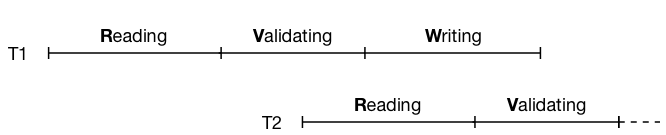

COMP9315 Week 09 Thursday Lecture
COMP9315 24T1 ♢ Week 9 Thursday Lecture ♢ [0/49]
- Assignment 1
- still marking people who did not get full marks
- put raw testing output for viewing ... final mark TBD
- will try to finalise all Ass1 marks by Sunday
- Assignment 2
- due at start week 10 (11:59pm Monday 15 April)
- learn to use GDB (for the exam)
- Help Sessions
- Friday 12 April 11-1, Monday 15 April 10-12
- MyExperience
- open now ... please give feedback ... closes April 25
COMP9315 24T1 ♢ Week 9 Thursday Lecture ♢ [1/49]
❖ Transactions: the story so far | |
Transactions should obey ACID properties
Isolation can be compromised by uncontrolled concurrency
Serializable schedules avoid potential update anomalies
- less safe (more concurrent) isolation levels exist
- read uncommitted, read committed, repeatable read
Styles of concurrency control
- lock-based concurrency control (two-phase, deadlock)
- optimistic concurrency control (try, then fix problems)
- multi-version concurrency control (less locking needed)
COMP9315 24T1 ♢ Week 9 Thursday Lecture ♢ [2/49]
❖ Lock-based Concurrency control | |
Synchronise access to shared data items via following rules:
- before reading X, get read (shared) lock on X
- before writing X, get write (exclusive) lock on X
- a tx attempting to get a read lock on X is blocked
if another tx already has write lock on X
- a tx attempting to get an write lock on X is blocked
if another tx has any kind of lock on X
These rules alone do not guarantee serializability.
Need two-phase locking protocol for serializability.
Other issues with locking: starvation, deadlock
COMP9315 24T1 ♢ Week 9 Thursday Lecture ♢ [3/49]
Deadlock occurs when two transactions are waiting
for a lock on an item held by the other.
Example:
T1: Lw(A) R(A) Lw(B) ......
T2: Lw(B) R(B) Lw(A) .....
How to deal with deadlock?
- prevent it happening in the first place
- let it happen, detect it, recover from it
COMP9315 24T1 ♢ Week 9 Thursday Lecture ♢ [4/49]
Handling deadlock involves forcing a transaction to "back off"
- select process to roll back
- choose on basis of how far tx has progressed, # locks held, ...
- roll back the selected process
- how far does this it need to be rolled back?
- worst-case scenario: abort one transaction, then retry
- prevent starvation
- need methods to ensure that same tx isn't always chosen
COMP9315 24T1 ♢ Week 9 Thursday Lecture ♢ [5/49]
Methods for managing deadlock
- timeout : set max time limit for each tx
- waits-for graph : records Tj waiting on lock held by Tk
- prevent deadlock by checking for new cycle ⇒ abort Ti
- detect deadlock by periodic check for cycles ⇒ abort Ti
- timestamps : use tx start times as basis for priority
- scenario: Tj tries to get lock held by Tk ...
- wait-die:
if Tj < Tk, then Tj waits;
if Tj > Tk, then Tj rolls back
- wound-wait:
if Tj < Tk, then Tk rolls back;
if Tj > Tk Tj waits
COMP9315 24T1 ♢ Week 9 Thursday Lecture ♢ [6/49]
Properties of deadlock handling methods:
- both wait-die and wound-wait are fair
- wait-die tends to
- roll back tx's that have done little work
- but rolls back tx's more often
- wound-wait tends to
- roll back tx's that may have done significant work
- but rolls back tx's less often
- timestamps easier to implement than waits-for graph
- waits-for minimises roll backs because of deadlock
COMP9315 24T1 ♢ Week 9 Thursday Lecture ♢ [7/49]
❖ Exercise: Deadlock Handling | |
Consider the following schedule on four transactions:
T1: R(A) W(C) W(D)
T2: R(B) W(C)
T3: R(D) W(B)
T4: R(E) W(A)
Assume that:
R ⇒ shared lock;
W ⇒ exclusive lock;
two-phase locking is used.
Show how the wait-for graph for the locks evolves.
Show how any deadlocks might be resolved via this graph.
COMP9315 24T1 ♢ Week 9 Thursday Lecture ♢ [8/49]
❖ Optimistic Concurrency Control | |
Locking is a pessimistic approach to concurrency control:
- limit concurrency to ensure that conflicts don't occur
Costs: lock management, deadlock handling, contention.
In scenarios where there are far more reads than writes ...
- don't lock (allow arbitrary interleaving of operations)
- check just before commit that no conflicts occurred
- if problems, roll back conflicting transactions
Optimistic concurrency control (OCC) is a strategy to realise this.
COMP9315 24T1 ♢ Week 9 Thursday Lecture ♢ [9/49]
❖ Optimistic Concurrency Control (cont) | |
Under OCC, transactions have three distinct phases:
- Reading: read from database, modify local copies of data
- Validation: check for conflicts in updates
- Writing: commit local copies of data to database
Timestamps are recorded at points
S, V, F :
COMP9315 24T1 ♢ Week 9 Thursday Lecture ♢ [10/49]
❖ Optimistic Concurrency Control (cont) | |
Data structures needed for validation:
- S ... set of txs that are reading data and computing results
- V ... set of txs that have reached validation (not yet committed)
- F ... set of txs that have finished (committed data to storage)
- for each Ti, timestamps for when it reached S, V, F
- RS(Ti) set of all data items read by Ti
- WS(Ti) set of all data items to be written by Ti
Use the
V timestamps as ordering for transactions
- assume serial tx order based on ordering of V(Ti)'s
COMP9315 24T1 ♢ Week 9 Thursday Lecture ♢ [11/49]
❖ Optimistic Concurrency Control (cont) | |
Two-transaction example:
- allow transactions T1 and T2 to run without any locking
- check that objects used by T2 are not being changed by T1
- if they are, we need to roll back T2 and retry
Case 0: serial execution ... no problem
COMP9315 24T1 ♢ Week 9 Thursday Lecture ♢ [12/49]
❖ Optimistic Concurrency Control (cont) | |
Case 1: reading overlaps validation/writing
- T2 starts while T1 is validating/writing
- if some X being read by T2 is in WS(T1)
- then T2 may not have read the updated version of X
- so, T2 must start again
COMP9315 24T1 ♢ Week 9 Thursday Lecture ♢ [13/49]
❖ Optimistic Concurrency Control (cont) | |
Case 2: reading/validation overlaps validation/writing
- T2 starts validating while T1 is validating/writing
- if some X being written by T2 is in WS(T1)
- then T2 may end up overwriting T1's update
- so, T2 must start again

COMP9315 24T1 ♢ Week 9 Thursday Lecture ♢ [14/49]
❖ Optimistic Concurrency Control (cont) | |
Validation check for transaction T
- for all transactions Ti ≠ T
- if T∈S & Ti∈F, then ok
- if T∉V & V(Ti) < S(T) < F(Ti),
then check WS(Ti) ∩ RS(T) is empty
- if T∈V & V(Ti) < V(T) < F(Ti),
then check WS(Ti) ∩ WS(T) is empty
If this check fails for any
Ti, then
T is rolled back.
COMP9315 24T1 ♢ Week 9 Thursday Lecture ♢ [15/49]
❖ Optimistic Concurrency Control (cont) | |
OCC prevents:
T reading dirty data,
T overwriting Ti's changes
Problems with OCC:
- increased roll backs**
- tendency to roll back "complete" tx's
- cost to maintain S,V,F sets
** "Roll back" is relatively cheap
- changes to data are purely local before Writing phase
- no requirement for logging info or undo/redo (see later)
COMP9315 24T1 ♢ Week 9 Thursday Lecture ♢ [16/49]
❖ Optimistic Concurrency Control | |
Locking is a pessimistic approach to concurrency control:
- limit concurrency to ensure that conflicts don't occur
Costs: lock management, deadlock handling, contention.
In scenarios where there are far more reads than writes ...
- don't lock (allow arbitrary interleaving of operations)
- check just before commit that no conflicts occurred
- if problems, roll back conflicting transactions
Optimistic concurrency control (OCC) is a strategy to realise this.
COMP9315 24T1 ♢ Week 9 Thursday Lecture ♢ [17/49]
❖ Optimistic Concurrency Control (cont) | |
Under OCC, transactions have three distinct phases:
- Reading: read from database, modify local copies of data
- Validation: check for conflicts in updates
- Writing: commit local copies of data to database
Timestamps are recorded at points
S, V, F :
COMP9315 24T1 ♢ Week 9 Thursday Lecture ♢ [18/49]
❖ Optimistic Concurrency Control (cont) | |
Data structures needed for validation:
- S ... set of txs that are reading data and computing results
- V ... set of txs that have reached validation (not yet committed)
- F ... set of txs that have finished (committing data to storage)
- for each Ti, timestamps for when it reached S, V, F
- RS(Ti) set of all data items read by Ti
- WS(Ti) set of all data items to be written by Ti
Use the
V timestamps as ordering for transactions
- assume serial tx order based on ordering of V(Ti)'s
COMP9315 24T1 ♢ Week 9 Thursday Lecture ♢ [19/49]
❖ Optimistic Concurrency Control (cont) | |
Two-transaction example:
- allow transactions T1 and T2 to run without any locking
- check that objects used by T2 are not being changed by T1
- if they are, we need to roll back T2 and retry
Case 0: serial execution ... no problem
COMP9315 24T1 ♢ Week 9 Thursday Lecture ♢ [20/49]
❖ Optimistic Concurrency Control (cont) | |
Case 1: reading overlaps validation/writing
- T2 starts while T1 is validating/writing
- if some X being read by T2 is in WS(T1)
- then T2 may not have read the updated version of X
- so, T2 must start again
COMP9315 24T1 ♢ Week 9 Thursday Lecture ♢ [21/49]
❖ Optimistic Concurrency Control (cont) | |
Case 2: reading/validation overlaps validation/writing
- T2 starts validating while T1 is validating/writing
- if some X being written by T2 is in WS(T1)
- then T2 may end up overwriting T1's update
- so, T2 must start again
COMP9315 24T1 ♢ Week 9 Thursday Lecture ♢ [22/49]
❖ Optimistic Concurrency Control (cont) | |
Validation check for transaction T
- for all transactions Ti ≠ T
- if T∈S & Ti∈F, then ok
- if T∉V & V(Ti) < S(T) < F(Ti),
then check WS(Ti) ∩ RS(T) is empty
- if T∈V & V(Ti) < V(T) < F(Ti),
then check WS(Ti) ∩ WS(T) is empty
If this check fails for any
Ti, then
T is rolled back.
COMP9315 24T1 ♢ Week 9 Thursday Lecture ♢ [23/49]
❖ Optimistic Concurrency Control (cont) | |
OCC prevents:
T reading dirty data, T overwriting Ti's changes
Problems with OCC:
- increased roll backs**
- tendency to roll back "complete" tx's
- cost to maintain S,V,F sets
** "Roll back" is relatively cheap
- changes to data are purely local before Writing phase
- no requirement for logging info or undo/redo (see later)
COMP9315 24T1 ♢ Week 9 Thursday Lecture ♢ [24/49]
❖ Multi-version Concurrency Control | |
Multi-version concurrency control (MVCC) aims to
- retain benefits of locking, while getting more concurrency
- by providing multiple (consistent) versions of data items
Achieves this by
- readers access an "appropriate" version of each data item
- writers make new versions of the data items they modify
Main difference between MVCC and standard locking:
- read locks do not conflict with write locks ⇒
- reading never blocks writing, writing never blocks reading
COMP9315 24T1 ♢ Week 9 Thursday Lecture ♢ [25/49]
❖ Multi-version Concurrency Control (cont) | |
WTS = timestamp of tx that wrote this data item
Chained tuple versions: tupoldest → tupolder → tupnewest
When a reader Ti is accessing the database
- ignore any data item D created after Ti started
- checked by: min(WTS(D)) > TS(Ti)
- use only newest version V accessible to Ti
- determined by: max(WTS(V)) < TS(Ti)
COMP9315 24T1 ♢ Week 9 Thursday Lecture ♢ [26/49]
❖ Multi-version Concurrency Control (cont) | |
When a writer Ti attempts to change a data item
- find newest version V satisfying WTS(V) < TS(Ti)
- if no later versions exist, create new version of data item
- if there are later versions, then abort Ti
Some MVCC versions also maintain RTS
(TS of last reader)
- don't allow Ti to write D if RTS(D) > TS(Ti)
COMP9315 24T1 ♢ Week 9 Thursday Lecture ♢ [27/49]
❖ Multi-version Concurrency Control (cont) | |
Advantage of MVCC
- locking needed for serializability considerably reduced
Disadvantages of MVCC
- visibility-check overhead (on every tuple read/write)
- reading an item V causes an update of RTS(V) (if used)
- storage overhead for extra versions of data items
- overhead in removing out-of-date versions of data items
Despite apparent disadvantages, MVCC is very effective.
COMP9315 24T1 ♢ Week 9 Thursday Lecture ♢ [28/49]
❖ Multi-version Concurrency Control (cont) | |
Removing old versions:
- Vj and Vk are versions of same item
- WTS(Vj) and WTS(Vk) precede TS(Ti) for all Ti
- remove version with smaller WTS(Vx) value
When to make this check?
- every time a new version of a data item is added?
- periodically, with fast access to blocks of data
PostgreSQL uses the latter (
vacuum).
COMP9315 24T1 ♢ Week 9 Thursday Lecture ♢ [29/49]
❖ Concurrency Control in PostgreSQL | |
PostgreSQL uses two styles of concurrency control:
- multi-version concurrency control (MVCC)
(used in implementing SQL DML statements (e.g. select))
- two-phase locking (2PL)
(used in implementing SQL DDL statements (e.g. create table))
From the SQL (PLpgSQL) level:
- can let the lock/MVCC system handle concurrency
- can handle it explicitly via
LOCK statements
COMP9315 24T1 ♢ Week 9 Thursday Lecture ♢ [30/49]
❖ Concurrency Control in PostgreSQL (cont) | |
PostgreSQL provides read committed and serializable isolation levels.
Using the serializable isolation level, a select:
- sees only data committed before the transaction began
- never sees changes made by concurrent transactions
Using the serializable isolation level, an update fails:
- if it tries to modify an "active" data item
(active = affected by some other tx, either committed or uncommitted)
The transaction containing the update must then rollback and re-start.
COMP9315 24T1 ♢ Week 9 Thursday Lecture ♢ [31/49]
❖ Concurrency Control in PostgreSQL (cont) | |
Implementing MVCC in PostgreSQL requires:
- a log file to maintain current status of each Ti
- in every tuple:
-
xmin ID of the tx that created the tuple
-
xmax ID of the tx that replaced/deleted the tuple (if any)
-
xnew link to newer versions of tuple (if any)
- for each transaction Ti :
- a transaction ID (timestamp)
- SnapshotData: list of active tx's when Ti started
COMP9315 24T1 ♢ Week 9 Thursday Lecture ♢ [32/49]
❖ Concurrency Control in PostgreSQL (cont) | |
Rules for a tuple to be visible to Ti :
- the
xmin (creation transaction) value must
- be committed in the log file
- have started before Ti's start time
- not be active at Ti's start time
- the
xmax (delete/replace transaction) value must
- be blank or refer to an aborted tx, or
- have started after Ti's start time, or
- have been active at SnapshotData time
For details, see:
utils/time/tqual.c
COMP9315 24T1 ♢ Week 9 Thursday Lecture ♢ [33/49]
❖ Concurrency Control in PostgreSQL (cont) | |
Tx's always see a consistent version of the database.
But may not see the "current" version of the database.
E.g. T1 does select, then concurrent T2 deletes some of T1's selected tuples
This is OK unless tx's communicate outside the database system.
E.g. T1 counts tuples; T2 deletes then counts; then counts are compared
Use locks if application needs every tx to see same current version
-
LOCK TABLE locks an entire table
-
SELECT FOR UPDATE locks only the selected rows
COMP9315 24T1 ♢ Week 9 Thursday Lecture ♢ [34/49]
❖ Exercise: Locking in PostgreSQL | |
How could we solve this problem via locking?
create or replace function
allocSeat(paxID int, fltID int, seat text)
returns boolean
as $$
declare
pid int;
begin
select paxID into pid from SeatingAlloc
where flightID = fltID and seatNum = seat;
if (pid is not null) then
return false;
else
update SeatingAlloc set pax = paxID
where flightID = fltID and seatNum = seat;
commit;
return true;
end if;
end;
$$ langauge plpgsql;
COMP9315 24T1 ♢ Week 9 Thursday Lecture ♢ [35/49]
❖ Implementing Atomicity/Durability | |
COMP9315 24T1 ♢ Week 9 Thursday Lecture ♢ [36/49]
Reminder:
Transactions are atomic
- if a tx commits, all of its changes persist in DB
- if a tx aborts, none of its changes occur in DB
Transaction effects are
durable
- if a tx commits, its effects persist
(even in the event of subsequent (catastrophic) system failures)
Implementation of atomicity/durability is intertwined.
COMP9315 24T1 ♢ Week 9 Thursday Lecture ♢ [37/49]
What kinds of "system failures" do we need to deal with?
- single-bit inversion during transfer mem-to-disk
- decay of storage medium on disk (some data changed)
- failure of entire disk device (data no longer accessible)
- failure of DBMS processes (e.g.
postgres crashes)
- operating system crash; power failure to computer room
- complete destruction of computer system running DBMS
The last requires off-site backup; all others should be locally recoverable.
COMP9315 24T1 ♢ Week 9 Thursday Lecture ♢ [38/49]
Consider following scenario:
Desired behaviour after system restart:
- all effects of T1, T2 persist
- as if T3, T4 were aborted (no effects remain)
COMP9315 24T1 ♢ Week 9 Thursday Lecture ♢ [39/49]
Durabilty begins with a stable disk storage subsystem
- i.e.
putPage() and getPage() always work as expected
We can prevent/minimise loss/corruption of data due to:
- mem/disk transfer corruption ⇒ parity checking
- sector failure ⇒ mark "bad" blocks
- disk failure ⇒ RAID (levels 4,5,6)
- destruction of computer system ⇒ off-site backups
COMP9315 24T1 ♢ Week 9 Thursday Lecture ♢ [40/49]
❖ Dealing with Transactions | |
The remaining "failure modes" that we need to consider:
- failure of DBMS processes or operating system
- failure of transactions (
ABORT)
Standard technique for managing these:
- keep a log of changes made to database
- use this log to restore state in case of failures
COMP9315 24T1 ♢ Week 9 Thursday Lecture ♢ [41/49]
❖ Architecture for Atomicity/Durability | |
How does a DBMS provide for atomicity/durability?
COMP9315 24T1 ♢ Week 9 Thursday Lecture ♢ [42/49]
❖ Execution of Transactions | |
Transactions deal with three address spaces:
- stored data on the disk
(representing global DB state)
- data in memory buffers
(where held for sharing by tx's)
- data in their own local variables
(where manipulated)
Each of these may hold a different "version" of a DB object.
PostgreSQL processes make heavy use of shared buffer pool
⇒ transactions do not deal with much local data.
COMP9315 24T1 ♢ Week 9 Thursday Lecture ♢ [43/49]
❖ Execution of Transactions (cont) | |
Operations available for data transfer:
-
INPUT(X) ... read page containing X into a buffer
-
READ(X,v) ... copy value of X from buffer to local var v
-
WRITE(X,v) ... copy value of local var v to X in buffer
-
OUTPUT(X) ... write buffer containing X to disk
READ/WRITE are issued by transaction.
INPUT/OUTPUT are issued by buffer manager (and log manager).
INPUT/OUTPUT correspond to getPage()/putPage() mentioned above
COMP9315 24T1 ♢ Week 9 Thursday Lecture ♢ [44/49]
❖ Execution of Transactions (cont) | |
Example of transaction execution:
BEGIN
READ(A,v); v = v*2; WRITE(A,v);
READ(B,v); v = v+1; WRITE(B,v);
COMMIT
READ accesses the buffer manager and may cause INPUT.
COMMIT needs to ensure that buffer contents go to disk.
COMP9315 24T1 ♢ Week 9 Thursday Lecture ♢ [45/49]
❖ Execution of Transactions (cont) | |
States as the transaction executes:
t Action v Buf(A) Buf(B) Disk(A) Disk(B)
-----------------------------------------------------
(0) BEGIN . . . 8 5
(1) READ(A,v) 8 8 . 8 5
(2) v = v*2 16 8 . 8 5
(3) WRITE(A,v) 16 16 . 8 5
(4) READ(B,v) 5 16 5 8 5
(5) v = v+1 6 16 5 8 5
(6) WRITE(B,v) 6 16 6 8 5
(7) OUTPUT(A) 6 16 6 16 5
(8) OUTPUT(B) 6 16 6 16 6
After tx completes, we must have either
Disk(A)=8, Disk(B)=5 or Disk(A)=16, Disk(B)=6
If system crashes before (8), may need to undo disk changes.
If system crashes after (8), may need to redo disk changes.
COMP9315 24T1 ♢ Week 9 Thursday Lecture ♢ [46/49]
❖ Transactions and Buffer Pool | |
Two issues arise w.r.t. buffers:
- forcing ...
OUTPUT buffer on each WRITE
- ensures durability; disk always consistent with buffer pool
- poor performance; defeats purpose of having buffer pool
- stealing ... replace buffers of uncommitted tx's
- if we don't, poor throughput (tx's blocked on buffers)
- if we do, seems to cause atomicity problems?
Ideally, we want stealing and not forcing.
COMP9315 24T1 ♢ Week 9 Thursday Lecture ♢ [47/49]
❖ Transactions and Buffer Pool (cont) | |
Handling stealing:
- transaction T loads page P and makes changes
- T2 needs a buffer, and P is the "victim"
- P is output to disk (it's dirty) and replaced
- if T aborts, some of its changes are already "committed"
- must log values changed by T in P at "steal-time"
- use these to UNDO changes in case of failure of T
COMP9315 24T1 ♢ Week 9 Thursday Lecture ♢ [48/49]
❖ Transactions and Buffer Pool (cont) | |
Handling no forcing:
- transaction T makes changes & commits, then system crashes
- but what if modified page P has not yet been output?
- must log values changed by T in P as soon as they change
- use these to support REDO to restore changes
Above scenario may be a problem, even if we are forcing
- e.g. system crashes immediately after requesting a
WRITE()
COMP9315 24T1 ♢ Week 9 Thursday Lecture ♢ [49/49]
Produced: 11 Apr 2024